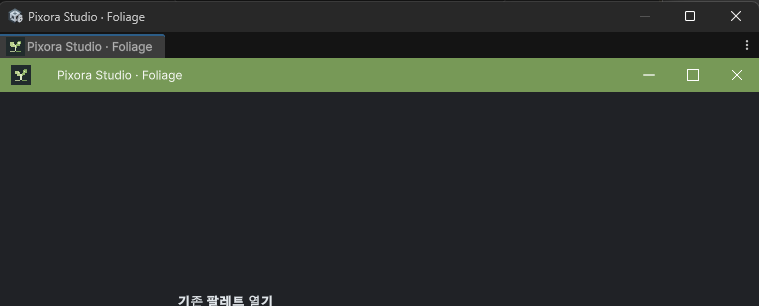

Tracefolio REPORTS & ISSUES
Tracefolio REPORTS & ISSUES식생 창 프레임 복구 구현·화면 검증 보류
검증 대기프레임 재열기의 상태 보존과 사용자 클릭 복구를 구현하고 컴파일했습니다. 화면 조작 중단 요청으로 실제 창 QA는 보류입니다.
작업 결과
코드 수정과 정적 컴파일은 끝났습니다. 현재 실행 창에 적용됐는지와 제목줄 중복이 실제 해소됐는지는 미확인입니다.
변경 내용
적용 내용
기존 기본 컨테이너가 재사용될 때 전용 ShowPopup 경로로 복구하는 사용자 클릭 처리를 추가했습니다. 컴파일만으로 창을 강제 재생성하거나 포커스를 가져오지 않습니다.
재열기에서 팔레트·캔버스·패치·항목·페인트 모드뿐 아니라 표면 레이어·높이·경사·테마·창 ID·위치와 저장·열기 중인 입력값도 보존하도록 보강했습니다. UI 재구성에서도 파일명·폴더·열기 선택과 단계 상태를 복원합니다. 실제 에셋과 씬을 자동 저장하지 않습니다.

검증
실제 CUA 관찰에서도 같은 기본 제목줄·탭을 확인했습니다. 보이던 콘텐츠는 기존 팔레트 열기 단계로 확인했으며, 빈 시작 화면이라고 단정하거나 레이아웃을 임의로 변경하지 않았습니다.
현재 소스의 메뉴 열기는 이미 ShowPopup을 호출합니다. 따라서 단순한 ShowPopup 누락이 원인이라고 판단하지 않았습니다. 창이 해당 컨테이너가 된 정확한 경로는 미확인입니다. 기본 컨테이너 복구와 상태 보존을 보강한 방어적 수정이며 원인 해결·재발 방지 통과로 보고하지 않습니다.
Unity6000.0.83f1의 실제 Roslyn csc와 기존 어셈블리 참조·응답 파일로 수정된 Editor 어셈블리 컴파일 exit0을 확인했습니다. Unity나 플레이어를 새로 실행하지 않았고, 화면 조작 중단 이후 클릭·창 전환·재시작·캡처를 수행하지 않았습니다. 현재 에디터가 로드한 빌드와 native 동작은 미검증입니다. 기존 문서 스크린샷과 해시를 갱신하지 않았습니다.
교훈 검토: 최신 화면 조작 중단 지시를 우선 적용했습니다. 기존 지침으로 포괄되어 전역 지침 변경 없음.
남은 사항
기존 메뉴 재열기, 일반 컨테이너 첫 클릭 복구, 미저장 파일명·선택값·위치 보존, 재로드·최소화 복원, 번역 상태 실제 확인 및 변경 후 캡처. 사용자 허락 전 화면 조작 금지.
작업 시간
- 제안 시간: 5–10분
- 실제로 완료된 시간: 2026-11-04 18:59:19 KST 시작, 19:09:54 KST 수정·정적 컴파일 완료(약10분35초). 실제 화면 QA 완료 시각 없음.
- XERJ: 실패 — 직전 Status/Search는 node 미실행·node.lock 점유로 실패. rg와 현재 Foliage·공통 프레임·기존 Forge 복구 소스를 대조했습니다.